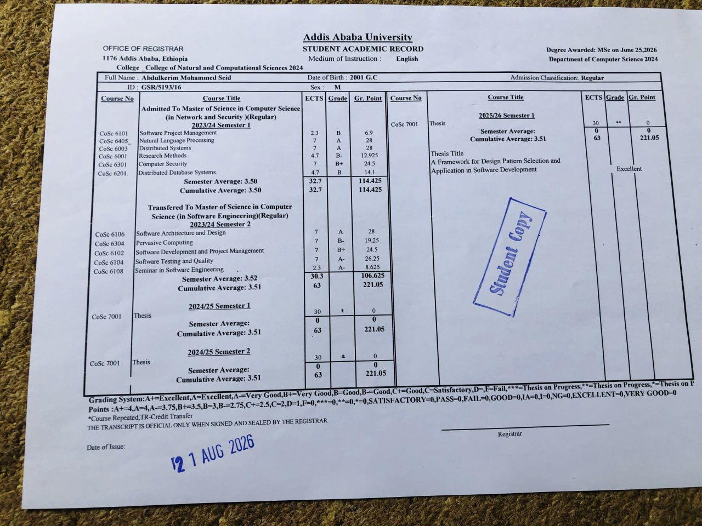

Backend heavy full stack software engineer with 7 years of experience building reliable, end-to-end applications.
I'm Abdulkerim Mohammed, a full-stack engineer with seven years of experience delivering end-to-end systems from responsive TypeScript frontends to high-throughput distributed backends in Go and Python. I bridge the gap between user-facing product requirements and robust backend architecture, knowing when to leverage event-driven microservices and when a clean monolith is the right call. Comfortable owning the complete lifecycle from UI components to production deployments on the cloud, my focus is on building performant, observable systems that scale cleanly.
I did my undergraduate studies in Computer Science at Addis Ababa University, then stayed on for a Master's degree in Software Engineering at the same university, completing it with a 3.5 GPA and thesis work rated Excellent.

master's certificate here click to zoomA distributed, microservices-based ride-hailing platform built to handle the real-time mechanics of ride matching and telemetry, with isolation and consistency boundaries enforced by design rather than squeezed into a single database.
Ride-hailing platforms look simple on the surface, but running one is a genuinely hard distributed systems problem: driver location updates stream in every few seconds, driver-rider matching has to happen instantly, and trip states, ride offers, and payments must coordinate across separate systems without dropping data or breaking down. Monolithic setups fall apart under this workload because heavy real-time operations—like tracking active drivers, keeping live map locations in memory, and searching for nearby rides—compete for the same database and CPU power as trip records and payment transfers.
Addis Ride was built as a distributed microservices system to solve this by isolating driver tracking, trip management, and payments into independent services. That meant establishing clear ownership boundaries between services, picking different protocols for different jobs (direct gRPC calls for internal service-to-service requests alongside event streams for asynchronous tasks), and making practical trade-offs between instant data syncing and service independence. It also required building in distributed tracing and metrics from day one, because tracking down a bug across multiple services without full request visibility is nearly impossible.
Four core services plus supporting infrastructure, each communicating over the protocol suited to its job: REST and WebSocket at the edge, gRPC internally, pub/sub for anything asynchronous.
End-to-end request flow tracing a trip from rider request through driver acceptance to payment—showing how the trip service, driver matching engine, notification service, and payment gateway coordinate across gRPC calls and event streams.
Drivers push live location continuously over an open WebSocket connection; Driver Service keeps a geohash-encoded index of positions up to date for efficient proximity queries. On trip creation, Trip Service publishes an event, Driver Service queries nearby available drivers and pushes an offer back through API Gateway. Driver Service never talks to a client device directly.
The messaging need was discrete, one-off business events and commands requiring reliable routing, things like "a trip was created" or "a driver accepted", not high-volume streams needing replay or historical processing. RabbitMQ's exchange-and-queue model with topic-exchange pub/sub routes individual business events to exactly the services that need them, without the operational overhead Kafka's log-based streaming would add for a workload that never needed stream processing.
API Gateway needed to scale horizontally across multiple instances behind a load balancer. In-memory connection tracking would mean a push could miss its target if the instance handling it wasn't the one holding that user's actual socket. Shared connection metadata in Redis lets any gateway instance resolve where a user is connected and route correctly.
A platform connecting TikTok influencers with brands for paid campaigns, built as a single, well-structured monolith, with trust between both sides enforced structurally through the platform rather than assumed.
Built to solve two problems seen firsthand in Ethiopia's creator economy: creators frequently completed sponsored content and either never got paid or were underpaid, with no real recourse; and brands had no reliable way to find influencers who actually matched their target audience beyond guesswork or personal networks. The goal was a system where trust wasn't just assumed; it was structurally enforced through the platform itself: verified data instead of self-reported stats, funds held in escrow instead of pay-on-promise, and a dispute process instead of no process at all. That meant handling real external data (TikTok's API), asynchronous background processing at scale (stat syncing across potentially thousands of influencer profiles), real-time communication, and financial transaction flows with proper safeguards, not just a listing/matching app bolted on top of a database.
A single application, deliberately, but composed of clearly separated internal modules rather than one undifferentiated codebase, with background job processing and external integrations (TikTok, Stripe) as the seams where real complexity lives.
End-to-end campaign lifecycle tracing verified stat syncing, contract creation, escrow lock, deliverable review, payout release, and dispute resolution.
Rather than letting influencers manually enter follower counts or engagement stats, the platform pulls this directly from TikTok's API. A deliberate trade-off: it adds integration complexity and dependency on an external API's rate limits and data availability, in exchange for actually solving the "brands can't tell who's legitimate" problem, one of the two core reasons the platform exists.
Influencer stats aren't fetched live on every profile view; they're synced on a schedule via Celery workers. This decouples TikTok API usage from user traffic, avoids repeatedly hitting rate limits or slowing down page loads with live external calls, and keeps stats reasonably fresh without needing to be real-time-accurate to the second, which the use case doesn't actually require.
Funds move from brand → escrow at contract start, and escrow → influencer only after deliverable approval, rather than a simpler direct-payment model. More complex to implement correctly, since it requires modeling contract state, deliverable-approval state, and payment-release state as related but distinct things, but it's the core trust mechanism the entire platform is built around. Without it, TikPartner is just a directory, not a protection layer.
Contracts can enter a disputed state distinct from the normal in-progress/completed/paid flow. A deliberate design choice rather than something patched on top, since escrow alone doesn't resolve disagreements about whether a deliverable actually met the agreed terms; it just holds the money until someone decides.